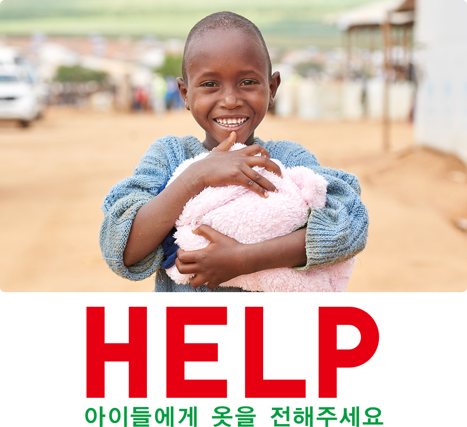

전 세계에서 빠르게 증가하고 있는 난민 중 절반 이상은 어린이 입니다※.빠르게 성장하는 아이들은 더 많은 옷이 필요하지만, 기증할 수 있는 수량은 이에 미치지 못하는 상황입니다.
2016년, UNHCR(유엔난민기구)에서 요청한 아동복 수량은 약 200만 벌. 여러분의 많은 협조로, 목표치의 63%에 도달할 수 있었습니다. 하지만, 아직도 많은 아동복의 지원이 필요합니다. 더 이상 입지 않는 유니클로 옷이 있으시다면 매장으로 가져와 주세요. 여러분의 따뜻한 마음을 유니클로가 난민 분들에게 전달하겠습니다.
※세계 난민의 51%가 18세 미만（2016년 UNHCR 조사 결과）
전 세계에서 빠르게 증가하고 있는 난민 중 절반 이상은 어린이 입니다※.빠르게 성장하는 아이들은 더 많은 옷이 필요하지만, 기증할 수 있는 수량은 이에 미치지 못하는 상황입니다.
2016년, UNHCR(유엔난민기구)에서 요청한 아동복 수량은 약 200만 벌. 여러분의 많은 협조로, 목표치의 63%에 도달할 수 있었습니다. 하지만, 아직도 많은 아동복의 지원이 필요합니다. 더 이상 입지 않는 유니클로 옷이 있으시다면 매장으로 가져와 주세요. 여러분의 따뜻한 마음을 유니클로가 난민 분들에게 전달하겠습니다.
※세계 난민의 51%가 18세 미만（2016년 UNHCR 조사 결과）
유니클로는 판매한 전 상품을 대상으로 재사용・재활용을 지속하고 있습니다. 고객 여러분이 기증해 주신 옷은 UNHCR(유엔난민기구)와 협동해 전 세계 난민 캠프로 기증하고 있으며, 입을 수 없는 옷도 연료로 활용하고 있습니다. 더 이상 입지 않게 된 유니클로 옷이 있으시다면, 매장으로 가져와 주세요. 저희가 책임을 지고 전달하겠습니다.
고객 여러분이 기증해 주신 옷이 어느 곳에 어떻게 전달되었는지 확인하실 수 있도록, 유니클로 임직원이 기증국 난민 캠프를 직접 방문하고 있습니다. 포토 리포트를 통해 확인해 주세요.